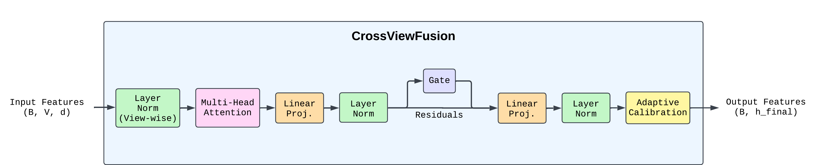
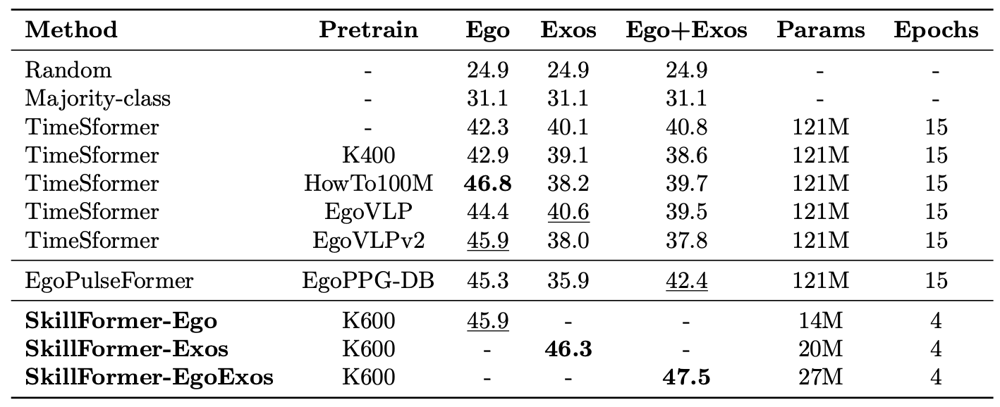
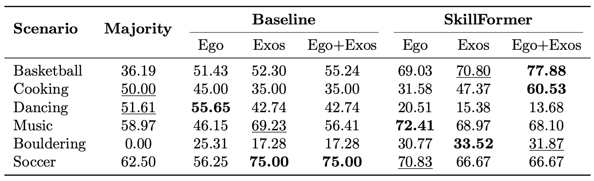
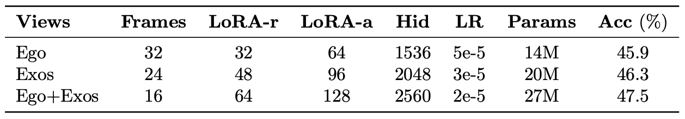

Abstract
Assessing human skill levels in complex activities is a challenging problem with applications in sports, rehabilitation, and training. In this work, we present SkillFormer, a parameter-efficient architecture for unified multi-view proficiency estimation from egocentric and exocentric videos. Building on the TimeSformer backbone, SkillFormer introduces a CrossViewFusion module that fuses view-specific features using multi-head cross-attention, learnable gating, and adaptive self-calibration. We leverage Low-Rank Adaptation to fine-tune only a small subset of parameters, significantly reducing training costs. In fact, when evaluated on the EgoExo4D dataset, SkillFormer achieves state-of-the-art accuracy in multi-view settings while demonstrating remarkable computational efficiency, using 4.5x fewer parameters and requiring 3.75x fewer training epochs than prior baselines. It excels in multiple structured tasks, confirming the value of multi-view integration for fine-grained skill assessment.
CrossViewFusion Module

Detailed architecture of the CrossViewFusion module. Input features (B,V,d) undergo: (1) Layer normalization per view, (2) Multi-head cross-attention enabling each view to attend to all others, (3) View aggregation via mean pooling, (4) Feed-forward transformation with GELU activation, (5) Learnable gating mechanism g = σ(Linear(h)) for selective feature modulation, (6) Final projection, and (7) Adaptive self-calibration using learnable statistics to align with classification space.
Comparison with State-of-the-Art Methods

SkillFormer achieves state-of-the-art classification accuracy in both Exos (46.3%) and Ego+Exos (47.5%) settings, outperforming the best TimeSformer baseline by up to 16.4%. In contrast to baselines—which train separate models for egocentric and exocentric inputs and perform late fusion at inference—SkillFormer uses a single unified model for each configuration, simplifying the architecture and inference pipeline.
Beyond improved accuracy, SkillFormer demonstrates exceptional computational efficiency, using 4.5x fewer trainable parameters (27M vs. 121M) and requiring 3.75x fewer training epochs (4 vs. 15) compared to TimeSformer baselines. Furthermore, we do not apply multi-crop testing, reducing computational overhead while maintaining superior performance. These results highlight SkillFormer's ability to achieve both higher accuracy and greater compute-efficiency.
It is worth noting that the proficiency label distribution is notably imbalanced, skewed toward intermediate and late experts due to targeted recruitment of skilled participants. This may bias overall accuracy by underrepresenting novice classes. Random and majority-class baselines perform significantly worse (24.9% and 31.1% respectively), underscoring the inherent complexity of the skill assessment task.
Per-Scenario Performance

SkillFormer consistently outperforms baseline models in the Ego+Exos setting for structured and physically grounded activities such as Basketball (77.88%) and Cooking (60.53%). These domains benefit from synchronized egocentric and exocentric perspectives, which enable better modeling of spatial layouts and temporally extended actions. The fusion of multi-view signals allows SkillFormer to exploit cross-perspective cues, such as object-hand interactions and full-body movement trajectories.
Interestingly, view-specific advantages emerge in certain domains. In Music, the Ego-only configuration achieves the highest accuracy (72.41%), suggesting that head-mounted views sufficiently capture detailed instrument manipulation. In Bouldering, the Exos-only configuration outperforms with 33.52% accuracy, indicating that third-person perspectives better capture full-body spatial positioning and climbing technique assessment. This highlights SkillFormer's flexibility to adapt to view-specific signal quality.
However, subjective domains like Dancing reveal limitations: SkillFormer's Ego+Exos accuracy (13.68%) falls significantly below both the majority baseline (51.61%) and the baseline Ego model (55.65%). This indicates that tasks with high intra-class variability and weak structure may not benefit from multi-view fusion, or may require additional modalities such as audio to disambiguate subtle skill indicators. These trends underscore that SkillFormer is particularly effective in domains requiring precise spatial-temporal reasoning and multi-view integration.
Architecture Configuration

As the number of views increases, our design prioritizes efficiency without compromising accuracy. We strategically reduce the number of frames per view (32→16)—preserving the temporal span with fewer sampled tokens—while proportionally increasing the LoRA rank (32→64), alpha (64→128), and hidden dimension (1536→2560). This trade-off compensates for reduced per-view tokens by enabling richer cross-view transformations through enhanced adapter capacity.
Our choice of LoRA rank and fusion dimensionality is not arbitrary. Higher ranks allow the adapter to express richer transformations across views, compensating for the reduced token budget. Empirically, increasing these parameters moderately yields significant gains in accuracy while maintaining training efficiency within tractable computational budgets. SkillFormer-Ego+Exos achieves 47.5% accuracy with only 27M trainable parameters—a 4.5x reduction compared to full fine-tuning of the 121M parameter TimeSformer backbone—demonstrating the effectiveness of low-rank adaptation and targeted fusion.
This design reflects a key motivation behind SkillFormer: enabling scalable, parameter-efficient skill recognition across multi-view egocentric and exocentric inputs. By balancing frame sampling, adapter capacity, and fusion complexity, we achieve state-of-the-art performance while maintaining computational tractability for real-world deployment scenarios.
BibTeX
@misc{bianchi2025skillformerunifiedmultiviewvideo,
title={SkillFormer: Unified Multi-View Video Understanding for Proficiency Estimation},
author={Edoardo Bianchi and Antonio Liotta},
year={2025},
eprint={2505.08665},
archivePrefix={arXiv},
primaryClass={cs.CV},
url={https://arxiv.org/abs/2505.08665},
}